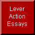

Many individuals have asked me where I stand on the issue of concealed carry permits -- and whether the Libertarian Second Amendment Caucus which I founded several years ago is likely to join in political coalitions with other organizations that concern themselves with Second Amendment issues.
I've put off writing about these matters before now, because it isn't easy, knowing that you're likely to alienate good friends and allies by insisting that they face hard truths. But the press of current events -- the increasingly obvious reluctance of the new Republican majority in Congress to make good on their promises to the gun owners who elected them, along with an insane eagerness on the part of nominally pro-gun organizations like the National Rifle Association to accept utter defeat on the eve of total victory -- make it impossible to put it off any longer.
As Robert A. Heinlein once observed, "The human race divides politically into those who want people to be controlled and those who have no such desire." To take it a step further, there are natural-born Tories in life, who only feel comfortable when they're groveling to some kind of authority, and there are individuals who won't grovel, no matter what it costs them.
This nation, America, was created by the latter sort, while the former ran away to Canada where, for the next eleven generations or so, they could comfortably grovel to kings, queens, and socialist bureaucrats. And just as some Canadians have since learned better than their Tory predecessors -- we'll be hearing more and more from them in the near future -- many descendants of those first Americans have become the very thing their ancestors fought so hard against.
Those who beg permission from the government to exercise a right they already possess are not free men and women. They're Tories; they're grovelers. They'd beg permission from the government to breathe, if they were told it was required of them. If they were told it was required of them, they'd beg permission from the government, even to grovel.
A license -- government permission -- to carry a concealed weapon is nothing but the latest kind of gun control, the latest kind of groveling. There's no way to euphemize it; there's no way to excuse it. It isn't necessary: nobody needs the government's permission to carry a weapon, concealed or otherwise. And it's illegal under the Second Amendment to the United States Constitution for government, at any level, to require it. That's right, it's illegal; and it's a primary goal of the Libertarian Second Amendment Caucus to jail those in government, elected or otherwise, who obstruct the Bill of Rights in any way.
It's also dangerous: it converts a fundamental human right into a privilege which the government may see fit to deny to anyone, for any reason, at any time is wishes. How anyone could be aware of history for the last hundred years -- especially the last fifty -- and not acknowledge this basic truth is beyond understanding.
From their public words and actions, it's clear that those who presently control the National Rifle Association -- I don't mean the duly-elected Board of Directors -- are Tories and grovelers, no matter what they claim to the contrary. Just listen to what they say if you doubt it, or read their literature. Half of it is devoted to demonstrating to their masters in the government just what excellent Tories and grovelers they are. Notice, too, the way that some of them claim lately to be "tough" -- but how they invariably reserve their toughness for individuals ostensibly on their own side who happen to disagree with them, rather than for real enemies of individual liberty and the Second Amendment.
Now those who presently control the National Rifle Association want uniform laws from state to state regulating the way Americans will be allowed to carry weapons. To get them, once again they're "wheeling and dealing" in Congress -- with my rights as the stake -- a fool's game they always lose because they're such embarrassingly clumsy amateurs, playing against the pros. Instead, they should simply demand the immediate fulfillment of Republican promises to repeal unconstitutional gun laws which could never have been passed without the cheerful assistance of the likes of "Brady Bill-Bob" Dole and Newt "Suspend the Bill of Rights" Gingrich.
As one who's fought the battle of the Second Amendment for more than 30 years -- all the while watching in unbelieving disgust as the National Rifle Association bargained away my rights through bad tactics, worse strategy, an utter lack of moral principle, and an overpowering urge to grovel to authority -- I challenge those who presently control the National Rifle Association to deny or affirm a principle put forward by the Libertarian Second Amendment Caucus as the Atlanta Declaration:
Every man, woman, and responsible child has an unalienable individual, civil, Constitutional, and human right to obtain, own, and carry, openly or concealed, any weapon -- rifle, shotgun, handgun, machinegun, anything -- any time, any place, without asking anyone's permission.If those who presently control the National Rifle Association cannot affirm this principle, then they are enemies of individual liberty who should resign immediately and leave the field forever to those Americans who can manage to remember what their country and its Constitution are all about.
If, on the other hand, they affirm it -- and publicly abandon their advocacy of anything less than stringent and uncompromising enforcement of the Bill of Rights (along with their disgraceful eagerness to accept excuses and "clever" strategies from Republicans instead of decisive and effective action) -- I'll be happy to advise the many friends of the Libertarian Second Amendment Caucus to join with the National Rifle Association in a coalition to advance the cause of individual liberty.
L. Neil Smith is the award-winning author of 19 books including The Probability Broach, The Crystal Empire, Henry Martyn, The Lando Calrissian Adventures, Pallas, and (forthcoming) Bretta Martyn and Lever Action. An NRA Life Member and founder of the Libertarian Second Amendment Caucus, he has been active in the Libertarian movement for 34 years and is its most prolific and widely-published living novelist.Permission to redistribute this article is herewith granted by the author -- provided that it is reproduced unedited, in its entirety, and appropriate credit given.
Talk to me!: lneil@lneilsmith.org

Back to L. Neil Smith's Lever Action Essays Page